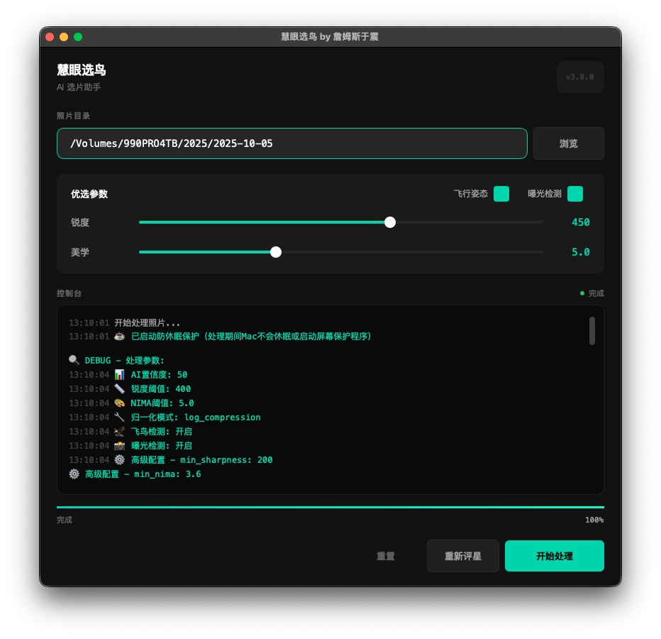
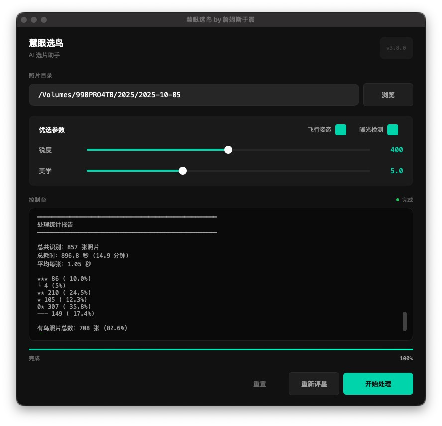
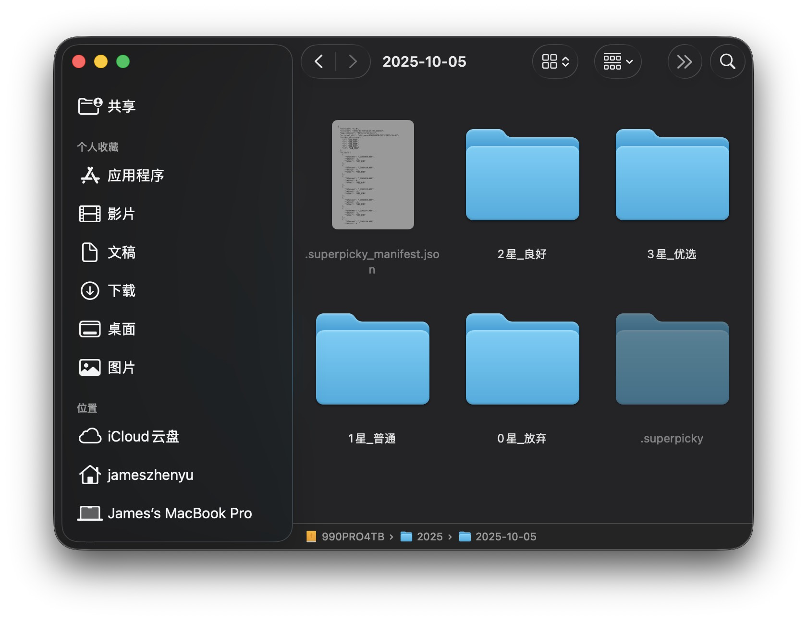
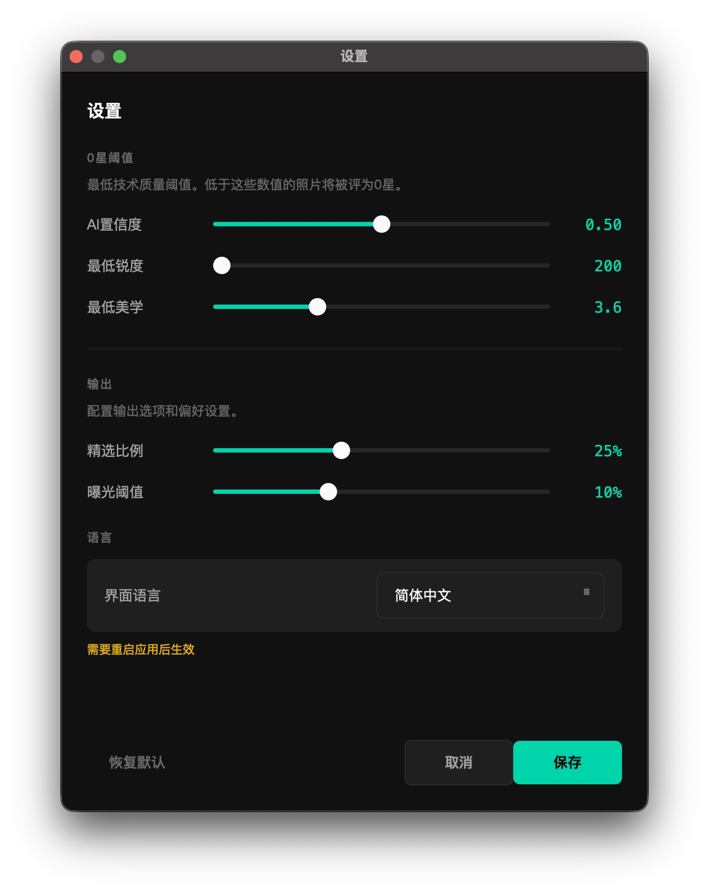

AI 鸟类摄影选片
慧眼选鸟
让AI帮你挑选最美鸟照
完全免费
macOS
Windows
亲爱的鸟友们，您是否也有这样的烦恼？
📷
每次外拍归来，面对成千上万张照片，不知从何选起？
👀
眼睛看花了，一张张筛选太累人？
⏰
宝贵的拍摄时间都浪费在选片上？
现在，有一款专为鸟类摄影师打造的免费AI选片神器！
核心功能

四大AI模型协同工作，多维度评估您的鸟类照片：
01
YOLO11 检测
精准识别鸟类位置
02
SuperEyes 鸟眼
检测眼睛可见度
03
SuperFlier 飞鸟
识别飞行姿态加分
04
TOPIQ 美学
评估构图与美感
评分规则
根据头部锐度和美学评分自动评定星级：
特殊标记
Pick
精选标记
从三星照片中选出锐度和美学双排名前25%的交集——这些就是这批照片的精华！
飞鸟
飞鸟绿标
AI识别到飞行姿态的照片用绿色标签标记，并获得额外加分。飞版难拍，理应获得更多认可！
曝光
曝光检测（可选）
可开启曝光问题检测，过曝或欠曝的照片会自动降星。默认关闭，需手动开启。
自动整理
处理完成后，照片自动按星级分类到不同文件夹：
📁 您的照片文件夹/
├── 3_stars/ ← 三星精品
├── 2_stars/ ← 二星良品
├── 1_stars/ ← 一星普通
└── 0_stars/ ← 零星淘汰
├── 3_stars/ ← 三星精品
├── 2_stars/ ← 二星良品
├── 1_stars/ ← 一星普通
└── 0_stars/ ← 零星淘汰
使用方法

1
选择文件夹
点击「浏览」按钮，选择包含照片的目录
2
调整参数
推荐：锐度 400，美学 5.0，勾选飞行姿态

3
开始处理
点击按钮，等待AI完成分析（约1秒/张）

4
查看结果
照片自动按星级分类，显示详细评分信息

导入
Lightroom
处理完成后，将照片导入Lightroom使用评分信息：
提示：精选旗标需要在Lightroom中「从文件读取元数据」后才能显示
高级设置
可根据需要调整各项参数：

✓ AI置信度调整
✓ 最低锐度/美学
✓ 精选比例设置
✓ 曝光阈值调整
不满意？可以点击「重置」一键恢复原始状态，重新调参再来！
为什么眼睛重要
系统要求
🍎 macOS 苹果电脑
- •macOS 10.15 或更高
- •Apple Silicon (M1/M2/M3/M4)
- •1.5GB 存储空间
🪟 Windows 电脑
- •Windows 10 或更高
- •NVIDIA GPU（推荐）
- •2GB 存储空间
立即免费下载
macOS版本 v3.8.0
Windows版本 v3.8
开发团队
开发者
詹姆斯·于震
澳籍华裔职业摄影师
模型训练
于若君
SuperEyes · SuperFlier
Windows版
小平
Windows平台移植
常见问题
❓ 软件收费吗？
完全免费！开源软件，不收取任何费用。
❓ 会损坏我的原片吗？
不会！软件只写入评分信息到EXIF，不修改原片画质。
❓ 评星不满意怎么办？
可以一键重置，恢复到处理前的状态。
❓ 处理速度快吗？
苹果M系列芯片可充分发挥AI加速，处理速度很快。